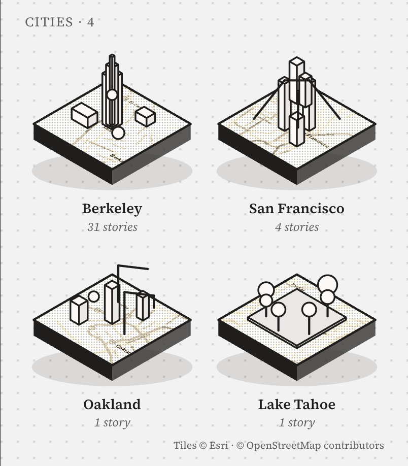

An app that turns a city into a map of the small things people did there. Write a list — "100 things before I graduate" — pin each thing to a landmark, walk it with a guide, and leave a trace. Every city you finish becomes a small 3D slab on your page.
Try the app ↓Maps tell you what is somewhere. They don't tell you what people did there.
The largest players have turned maps into a social layer, but almost all of them are built around the present moment: where a friend is right now, what is happening nearby. Personal history — the 5:50 carillon, the $4 bánh mì on the steps — still lives in group chats and graduates with the people who had it.
Monthly active users on Snap Map as of May 2025 — including "Footsteps", a view of how much of the world you've explored.
Snap Newsroom · 2025Instagram launches its own Map, letting users share their last active location with chosen friends — opt-in, inside DMs.
Meta Newsroom · 2025Travelers on Polarsteps, which records routes automatically and turns them into keepsake travel books — proof people pay to relive movement.
Polarsteps · 2026New default auto-delete for Google Maps Timeline after it moved on-device; the web version ended June 9, 2025.
Android Police · Daftei · 2025| Product | Core job | Time frame | Gap |
|---|---|---|---|
| Snap Map | See friends nearby, discover local hotspots | Now | Discovery is ambient; nothing to finish, no reason to return |
| Instagram Map | Share last active location, browse tagged content | Now · 24h | Privacy anxiety on launch; content expires rather than accumulates |
| Polarsteps | Track and relive trips | Past · per trip | Built for travel, not the everyday places you return to |
| Google Timeline | Private log of every visit | Past · 3 mo. default | Solitary, utilitarian, and increasingly short-lived |
| Footprints | Lists you walk; traces that stay on the place | Past · cumulative | — |

Students with a clock running on a place; then visitors, new arrivals and locals who want the version of a city insiders know. Free to make, walk and share; revenue comes from people who want more of the Guide, from places that want to be on a good list, and from the souvenirs a day leaves behind.
The Guide without limits — unlimited routes and photo check-ins, offline city packs, private lists, the full postcard archive. $4.99 / month · student $2.99.
Venues publish their own lists, clearly labelled, and pay $0.50–$2 per verified check-in — never per view.
Universities and tourism boards commission lists on an annual licence; the day's postcard mails as a real card ($3) or a print ($24).
A business can never buy a place on someone else's list, or pay to hide a trace.
Every trace makes the map richer for the next person — which is what brings them in. Step 6 feeds step 1: the loop closes when someone else discovers what you left.
Open the map. Landmarks show how many people left traces there. Tap one to read them.
Map · place sheetSave someone's list, or make your own and pin each thing to a place.
Lists · new listAsk the Guide. It plans a route through your list using what others did.
GuideTake a photo at the place. The Guide recognises it and ticks the thing off.
Check-inAdd a line and a rating. It appears on the landmark for the next person.
Place · your pageAt the end of the day the Guide draws a postcard. Save it, or send the link.
PostcardThree objects hold the whole product. A landmark stands on real geography as an inked isometric building — tower, colonnaded library, awninged shopfront, a mound for the Big C — with a flag above counting the traces left there.
A landmark on the map at true coordinates. Tap it to read what people did there.
Things worth doing, each pinned to a place. Progress is counted in isles, not checkboxes.
One person doing one thing at one place, with a photo and a line. A check-in needs a photo the Guide recognises there. Ratings come only from people who finished the thing — no trace, no review.
Nothing on the map is decorative. The base is real geography (Esri street tiles), desaturated and washed to paper so streets read as faint 2D lines. A place rises into 3D only when people have left traces there; its shape, height and label are all derived from data.
Every tile passes through grayscale → contrast → paper overlay. Roads, water and blocks stay two-dimensional; nothing competes with a landmark.
A place gets a 3D isle only if count > 0. The flag above it shows the count; the building type is chosen from the place's kind — tower, library, street, park, bakery, hill, lawn.
Isle size follows 0.55 + (zoom − 15) × 0.3, clamped to 0.55–1, so buildings shrink as you pull out and never bury the streets.
Names are placed by trace count, highest first; any label that would overlap a busier one hides. A route is drawn only for the list you are walking today.
Lumen never speaks. It plans a route through other people's traces, recognises your photo when you check in, and turns the day into a postcard. On the map it is the only thing that glows — cyan on paper, the one colour reserved for interaction.
A check-in requires a photo the Guide recognises at that place. Photo recognition is simulated in the prototype with per-place tags.
Nothing is live. The app only knows where you chose to leave a trace, and you decide which parts of your page a visitor sees.
Tap Sather Tower, open a person, follow their list, check in with a photo and let Lumen draw the postcard. Tabs, guide chips, checkboxes and "New list" all work. Best on the phone to the right; on a small screen it fills the width.
Open full screen →Three moments from the flow, each opened directly. Tabs, guide chips, list checkboxes and "New list" all work — click through any phone.
Your page opens on the cities you've collected — each a small isometric block of real map tiles carrying the landmarks you left traces on: Berkeley's tower, San Francisco's downtown, Oakland, the trees of Tahoe. Below: your stories on a map, lists you made, lists you saved. A settings screen shows the page exactly as a visitor would see it.
Source Serif as the chrome, cyan for interaction, magenta as the rare stamp colour, 2px radii, whitespace instead of dividers. The hand-drawn softness lives only in the isles, the sprite and the postcard.
Newsprint paper, dawn sky, ink-and-wash. Paper was chosen — quietest, most editorial.
Berkeley first, seeded with twenty lists before launch. Then the next five campuses, then the cities students travel to. The loop is the product.
— 2026 · Zhang Yichi